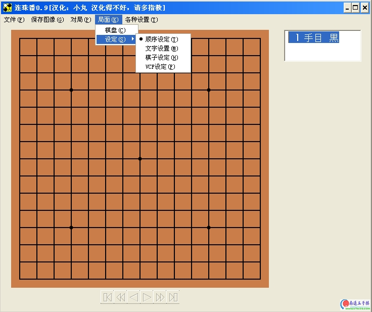

日本连珠番软件小丸汉化版
首页
五子棋软件
#1 日本连珠番软件小丸汉化版 作者：有志青年 发表时间：2007-3-28 16:40:48

虽然生成的文件格式比较特殊，但是作为打谱软件，功能不错。
点击下载
#2 Re:日本连珠番软件小丸汉化版 作者：江南新绿 发表时间：2007-3-28 19:51:34
小鬼子这个东西做的很是实用啊。
#3 Re:日本连珠番软件小丸汉化版 作者：gerbo 发表时间：2007-3-29 2:13:10
 好东西，就不要放过了，哈哈
好东西，就不要放过了，哈哈
#4 Re:日本连珠番软件小丸汉化版 作者：gerbo 发表时间：2007-3-29 2:18:55
我下载了这个软件，点击开了Ｒenjuban09.exe文件，再从这个文件中打开Ｓample ,怎么没找到东西啊，一片空白~高手指点下！
#5 Re:日本连珠番软件小丸汉化版 作者：gerbo 发表时间：2007-3-29 2:23:14
对了可以做个所有常用格式的集成软件么？就象双模手机样的，可以做到么？免的到处找文件了！
#6 Re:Re:日本连珠番软件小丸汉化版 作者：有志青年 发表时间：2007-3-29 2:27:46
引用：
原文由 gerbo 发表于 2007-3-29 2:18:55 :
我下载了这个软件，点击开了Ｒenjuban09.exe文件，再从这个文件中打开Ｓample ,怎么没找到东西啊，一片空白~高手指点下！
打开定式
#7 Re:日本连珠番软件小丸汉化版 作者：江南新绿 发表时间：2007-3-29 11:33:47
觉得棋子上的1，2，3，4还是不够漂亮。而且如果缩小的话，黑棋中的白色还是太少了。
#8 Re:日本连珠番软件小丸汉化版 作者：zmrbak 发表时间：2009-2-14 18:13:54
选择“打开定式...”，可以进行练习。